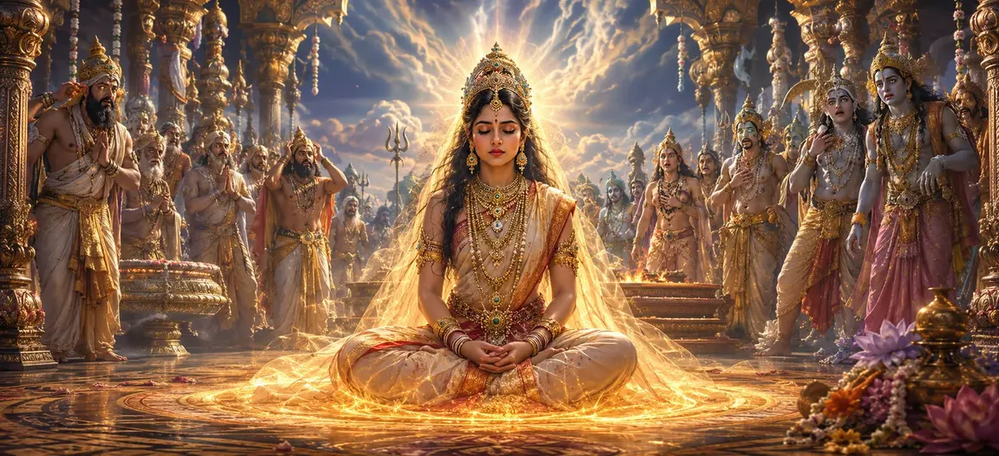

Sati Abandons Her Body
In Chapter 18 of the Vayaviya Samhita, Lord Vayu narrates the poignant and momentous account of Goddess Sati abandoning her physical body at King Daksha's sacrificial arena after facing unmitigated disrespect towards Lord Shiva.
This chapter captures the intense emotional and spiritual turning point leading to divine retribution.
Devotees witness the ultimate defense of righteousness and unwavering devotion.
Chapter 18 Comprehensive Highlights
Daksha's Yagna
The grand sacrifice hosted by King Daksha without inviting Lord Shiva.
Sati's Arrival
Sati visiting her parental home despite Lord Shiva's cautionary advice.
Profound Insult
Facing harsh abuse and disregard hurled against Supreme Shiva.
Yogic Fire
Kindling the inner fire of yoga to abandon the physical frame.
Grief and Outrage
The immediate wave of sorrow and agitation across the cosmos.
Prelude to Virabhadra
Setting the stage for the wrathful manifestation of Virabhadra.
Core Topics in This Chapter
- 01The Provocative Yagna of Daksha→
- 02Sati's Resolve to Attend→
- 03Arrival at the Sacrificial Arena→
- 04Confronting Parental Hostility→
- 05Defense of Lord Shiva's Honor→
- 06Kindling the Inner Yogic Flame→
- 07Abandoning the Mortal Frame→
- 08Cosmic Shock and Turmoil→
- 09Spiritual Reflection on Sacrifice→
- 10Transition to The Origin of Virabhadra→
The Provocative Yagna of Daksha
Lord Vayu recounts how King Daksha organized a grand sacrifice, intentionally omitting Lord Shiva out of arrogance and enmity.
This slight sets the stage for monumental cosmic consequences.
Sati's Resolve to Attend
Despite Lord Shiva advising against going uninvited, Sati feels a daughter's urge to visit her parental home during the grand event.
Arrival at the Sacrificial Arena
Upon reaching her father's assembly, Sati is met with cold indifference and hostile silence from Daksha.
Confronting Parental Hostility
Daksha publicly hurls insults at Lord Shiva, attempting to demean the Supreme Lord in front of all assembled sages and gods.
Defense of Lord Shiva's Honor
Unable to tolerate disrespect towards her divine consort, Sati fiercely defends Shiva's supreme stature and unblemished honor.
Kindling the Inner Yogic Flame
Finding her father incorrigible and her soul burdened, Sati decides to discard the physical body born of Daksha.
Abandoning the Mortal Frame
Through intense yogic concentration, Sati kindles the inner fire of spiritual energy, consuming her mortal frame cleanly.
Cosmic Shock and Turmoil
A wave of grief, shock, and tremor sweeps across the universe as news of Sati's sacrifice spreads among celestial beings.
Spiritual Reflection on Sacrifice
Sati's act becomes an eternal symbol of supreme devotion, honor, and the uncompromising rejection of unrighteousness.
Transition to The Origin of Virabhadra
Concluding Chapter 18, the narrative prepares for Lord Shiva's divine wrath and the creation of Virabhadra.
Extended Key Teachings of Chapter 18
Daksha's Flaw
Arrogance leading to exclusion of Shiva.
Sati's Sacrifice
Abandoning the physical body through yoga.
Defense of Honor
Standing firm against disrespect of Shiva.
Cosmic Turmoil
Shock and grief across all celestial realms.
Unwavering Devotion
Exemplifying supreme loyalty to the Lord.
Virabhadra's Path
Setting up the emergence of divine wrath.
Expanded Spiritual Reflection
Goddess Sati's sacrifice teaches us that true honor, spiritual integrity, and devotion to the Divine take precedence over physical ties and worldly expectations. Her purity transforms sorrow into an eternal beacon of righteousness.
Living the Message of Chapter 18
Stand firm against disrespect and unrighteousness, upholding your spiritual principles with courage.
Cultivate deep, unshakeable devotion that transcends ego, worldly attachments, and social pressure.
Honor the sacredness of divine truth in all your thoughts, words, and actions.
Detailed Key Spiritual Concepts
The sacred sacrifice of Goddess Sati.
The inner fire of yogic concentration.
Disrespect and hostility from one's father.
Supreme, uncompromising devotion to Shiva.
The impending destruction of Daksha's sacrifice.
Radiant divine power and spiritual honor.
Exhaustive Chapter Summary
Vayaviya Samhita Chapter 18 ('Sati Abandons Her Body') details the poignant events at King Daksha's uninvited yagna. Faced with severe insults hurled against Lord Shiva, Goddess Sati courageously defends His honor before kindling her inner yogic fire to discard her physical body, setting the stage for the wrathful emergence of Virabhadra.
Frequently Asked Questions
1. What is the primary theme of Vayaviya Samhita Chapter 18 ('Sati Abandons Her Body')?
The chapter narrates the profound sacrifice of Goddess Sati, who discards her physical body at King Daksha's uninvited yagna due to insults hurled against Lord Shiva.
2. Why did Goddess Sati attend Daksha's sacrifice against counsel?
Sati attended out of natural filial affection to witness her parental home's ceremony, despite Lord Shiva's warning regarding Daksha's hostility.
3. How does Sati discard her mortal frame?
Unable to bear the insults and disrespect directed at Lord Shiva by her father Daksha, Sati kindles the inner yogic fire within her body and releases her soul.
4. What is the spiritual significance of Sati's sacrifice?
It symbolizes the absolute supremacy of divine honor and the rejection of ego, disrespect, and unrighteousness.
5. What immediate consequence follows Sati abandoning her body?
Grief and outrage spread across the realms, paving the way for the emergence of Lord Virabhadra to dismantle Daksha's sacrifice.
6. What is the next chapter for navigation after this chapter?
The next chapter for navigation is 'The Origin of Virabhadra'.
“True devotion brooks no insult to the Divine; Sati's sacred fire remains an eternal symbol of supreme honor.”
Continue Through Vayaviya Samhita
Chapter 18 concludes. Continue to the next chapter, The Origin of Virabhadra.